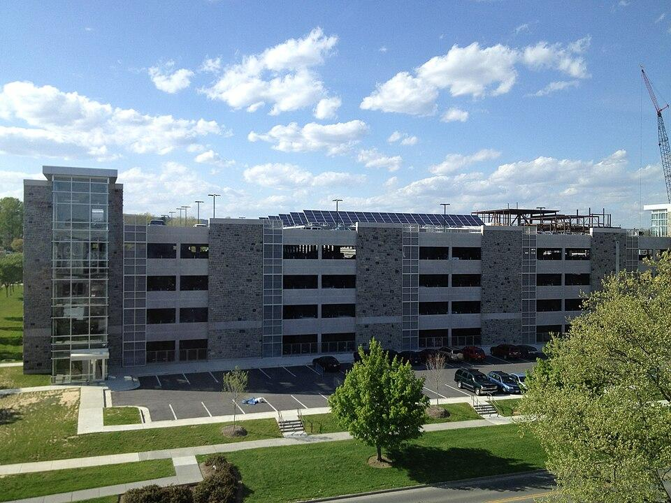

1Project Summary
Our project focuses on designing a Smart Campus Transportation System for Virginia Tech. The purpose of the system is to improve how students, faculty, staff, and visitors access transportation and parking information across campus. Currently, it is difficult for users to find reliable information about bus arrival times, parking availability, and transportation delays. Our proposed system would bring these services together in one place, providing real-time bus and shuttle locations, estimated arrival times, route and schedule information, and parking availability for each campus lot. The system would also help transportation operators monitor conditions and identify potential issues. Since the system depends on continuous updates from vehicles and parking sensors, its design must account for scalability, reliability, and situations where data is delayed or unavailable. The overall goal is to make campus transportation more predictable and convenient while helping operators monitor transportation conditions more effectively.

2Background
Transportation and parking are important parts of daily life at Virginia Tech. Students, faculty, and staff regularly travel to campus for classes, work, and other activities. Many people depend on buses, shuttles, or personal vehicles to reach their destinations. However, finding accurate and timely information about transportation and parking can be challenging, especially during busy hours.
Virginia Tech already has bus tracking services, but the information is not always reliable. Unexpected delays, inaccurate arrival estimates, and missing location updates can make it difficult for riders to plan their trips. Students who depend on public transportation may spend extra time waiting at stops or risk arriving late to class. Although route and schedule information is available, it does not always reflect current transportation conditions.
Parking is another major concern, especially for students and employees who commute to campus by car. Popular parking lots can become crowded during peak hours, and drivers may not know whether spaces are available until they arrive. When a lot is full, drivers must search for another location, which can waste time and contribute to congestion around campus. Parking restrictions also make the situation more complicated because not every driver is permitted to park in every lot.


These challenges also affect transportation and parking operators. Transit operators need accurate information to monitor vehicle locations, identify delays, and respond to service disruptions. Parking operators need to monitor lot availability, manage temporary closures, and recognize situations where parking information may be inaccurate. When information comes from separate sources, it becomes more difficult to maintain a clear understanding of transportation conditions across campus.
Our proposed Smart Campus Transportation System aims to address these problems by bringing bus and shuttle tracking, estimated arrival times, route information, and parking availability together in one platform. Students, faculty, staff, and visitors would be able to access this information through a web or mobile application, while transportation and parking operators would use a separate dashboard to monitor conditions and manage service information.
3Use Cases/User Base
The Smart Campus Transportation System is designed for people who travel to or around Virginia Tech, as well as staff responsible for managing campus transportation and parking. Students, faculty, staff, and visitors would primarily use the system to check bus arrival times, view routes, and find available parking. Transit and parking operators would use a separate dashboard to monitor conditions and manage service information. System administrators would manage supporting information such as schedules and system settings. The following use cases describe common situations in which different users would interact with the proposed system.
UC-1: Finding Available Parking
A student who drives to Virginia Tech needs to find parking before attending class. The student usually parks in a particular campus lot, but it is often crowded during busy hours. Without knowing whether spaces are available, the student may arrive at a full lot and need to spend additional time searching elsewhere. Before leaving for campus, the student opens the Smart Campus Transportation System and checks parking availability. The system displays the number of open spaces, current availability status, and time of the latest update for each parking lot. The student can also filter lots based on their parking permit type to avoid selecting a location where they are not allowed to park.
After comparing the available options, the student chooses a lot with open spaces that allows their permit type. If a parking sensor stops reporting or provides invalid information, the system marks the live count as unavailable and displays an estimated status instead. This allows the student to make a more informed decision without assuming that outdated information is accurate.
UC-2: Tracking a Bus or Shuttle
A student who lives off campus regularly takes the bus to Virginia Tech. The student needs to arrive at class on time but has experienced situations where a bus arrives later than expected. Relying only on the published schedule makes it difficult to decide when to leave for the bus stop.
The student opens the Smart Campus Transportation System and selects a nearby bus stop. The system displays the routes serving that stop and the next three arrival times for each route. The student can also view current bus and shuttle locations on a map, along with their routes and the times of their latest location updates. Using the estimated arrival times, the student decides when to leave for the stop. As new vehicle information becomes available, the system updates the arrival estimates to reflect current conditions.
If a vehicle stops reporting its location for more than 90 seconds, the system marks its information as delayed. After five minutes without an update, the outdated vehicle location is removed from the map, and scheduled arrival times are shown instead. This helps the student understand whether the displayed information is based on live data or the published schedule.

UC-3: Monitoring Bus Delays and Service Disruptions
A Blacksburg Transit operator is responsible for monitoring buses and shuttles serving the Virginia Tech campus. During busy periods, traffic congestion or unexpected problems may cause vehicles to fall behind schedule. The operator needs to identify these problems and communicate important changes to riders.
The operator signs in to the Smart Campus Transportation System and opens the operator dashboard. The dashboard displays the current status of vehicles in service, including how early or late they are compared with their schedules. Vehicles that are significantly delayed, off route, or no longer reporting their locations are flagged for attention.
The operator notices that a bus is running more than five minutes late and investigates the situation. If the disruption affects passengers, the operator can create a service alert through the dashboard. The system displays the alert to riders viewing the affected route or stop. When the disruption ends, the operator can close the alert so that riders no longer see it as active. This allows the operator to monitor transportation conditions and communicate service changes more effectively.
UC-4: Managing Parking Conditions
A Virginia Tech parking operator is responsible for monitoring parking availability across campus. During busy periods, several parking lots may approach capacity, while others may experience sensor problems or temporary closures. The operator needs accurate information to understand which lots are available and where adjustments may be necessary.
The operator signs in to the Smart Campus Transportation System and opens the parking section of the operator dashboard. The system displays the number of available spaces and the current status of each campus parking lot. It also identifies counting devices that are delayed, unavailable, or reporting invalid data. The operator notices that the reported count for one lot does not match its actual occupancy. After confirming the correct count, the operator manually adjusts the information through the dashboard. The system then updates the displayed parking availability.
If a parking lot needs to close for an event or another reason, the operator can mark it as closed. The rider app reflects this change so that commuters can avoid the unavailable lot. When the lot becomes available again, the operator can reopen it through the dashboard.
UC-5: Updating Route and Schedule Information
A system administrator is responsible for keeping transportation information accurate and up to date. When Blacksburg Transit changes its routes or schedules, the administrator needs to make sure the Smart Campus Transportation System reflects those changes.
The administrator signs in to the system and accesses the schedule management functions. After receiving an updated schedule from Blacksburg Transit, the administrator loads the new schedule and specifies when it should take effect. Once the new schedule becomes active, the system uses the updated route and timetable information when displaying routes, stops, and arrival times. This allows riders to access current schedule information without relying on outdated routes or departure times.
4Requirements
This section states what the Smart Campus Transportation System must do and the qualities it must have. Every requirement has an ID, and Sections 5, 6, and 7 use these IDs to show which part of the design meets each requirement.
4.1 Customer and Users
The customer is Virginia Tech, represented by its Parking Services office, which would fund and own the system. Blacksburg Transit, which the Town of Blacksburg operates, is the transit partner. Blacksburg Transit provides the vehicle and schedule data, and its staff use the operator dashboard.
Table 4-1. User classes.
| ID | User class | Description and needs |
|---|---|---|
| U1 | Students | This class covers students who commute to campus or ride buses around campus. They need to know when the next bus will arrive and where to find an open lot that their permit allows. |
| U2 | Faculty and staff | This class covers employees who drive or ride to campus. They need to find an open lot near their building when they arrive and to check bus arrival times. |
| U3 | Visitors and event attendees | This class covers people who come to campus for visits, games, and events. They need to find visitor and event parking and the buses that serve events. |
| U4 | Transit operators | This class covers Blacksburg Transit dispatchers and supervisors. They need to see where every bus is, spot problems early, and post alerts, detours, and trip cancellations. |
| U5 | Parking operators | This class covers Parking Services staff. They need to see every lot’s count, correct counts that drift, and close lots for events. |
| U6 | System administrators | This class covers the staff who run the system. They need to load new schedules, keep lot data current, change settings, and manage staff accounts. |
U1, U2, and U3 use the rider app on their phones or in a web browser. U4, U5, and U6 use the operator dashboard.
4.2 Scope
In scope
- The system covers the Blacksburg Transit fixed routes that serve campus, including the Campus Shuttle and game-day service.
- The system covers the Virginia Tech parking lots and garages on the Blacksburg campus.
- The system provides a rider app for phones and web browsers, an operator dashboard, and alerts.
Out of scope
- The system does not handle fare payment. Blacksburg Transit is fare-free.
- The system does not sell parking permits or issue citations. The existing parking portal and the license-plate enforcement system handle these tasks.
- The system does not book trips on BT Access, the paratransit service.
- The system does not include buying or installing the location units on buses or the counting devices at lots.
4.3 Assumptions
- A1. Each vehicle carries a location unit that reports through Blacksburg Transit’s vehicle system every 10 to 30 seconds. That system offers a data interface that the Smart Campus Transportation System can connect to. No public real-time feed for Blacksburg Transit was found.
- A2. Each lot has counting devices at its entrances and exits. These devices are entry and exit counters or the license-plate cameras that Virginia Tech now uses for permits. Each device reports entry and exit events and sends a heartbeat at least every 60 seconds.
- A3. Blacksburg Transit continues to publish its routes and schedules in GTFS format.
- A4. Parking Services provides each lot’s capacity, allowed permit types, and status thresholds.
4.4 Terms
Table 4-2. Terms.
| Term | Meaning |
|---|---|
| Vehicle | A vehicle is a Blacksburg Transit bus or shuttle. A vehicle is in service while it runs a trip. |
| Operator | An operator is a transit or parking staff member who uses the operator dashboard. Bus drivers are not called operators in this document. |
| GTFS | GTFS (General Transit Feed Specification) is the standard file format for transit routes, stops, and schedules. |
| Heartbeat | A heartbeat is a short message that a device sends regularly to show that it is working. |
| Live | A data source is live when it reports on time. |
| Delayed | A data source is delayed when it has not reported for 90 seconds, or for 2 minutes in the case of a lot counting device. |
| Silent | A data source is silent when it has not reported for 5 minutes, or for 2 minutes in the case of the whole vehicle data feed. |
| Scheduled | A scheduled time comes from the timetable instead of from vehicle data. |
| Estimated | An estimated lot status is a prediction based on how full the lot was at the same time in past weeks. |
4.5 How to Read the Requirements
Functional requirements are numbered FR-1 to FR-13, and non-functional requirements are numbered NFR-1 to NFR-9. Must means the first release needs the requirement, and Should means the first release plans to include it. The last column says how a tester checks the requirement.
4.6 Functional Requirements
Table 4-3. Functional requirements.
| ID | Feature | Requirement | Priority | How it is checked |
|---|---|---|---|---|
| FR-1 | Vehicle tracking | The rider app shall show each in-service vehicle on a map with its route and the time of its last position report. | Must | Demonstration |
| FR-2 | Vehicle tracking | If a vehicle’s newest position is more than 90 seconds old, then the system shall label the vehicle and its arrival times “delayed”. After 5 minutes without a new position, the system shall remove the vehicle from the map and show scheduled times for its trips. | Must | Test |
| FR-3 | Vehicle tracking | If no vehicle reports at all for 2 minutes during service hours, then the system shall treat the whole vehicle data feed as silent, and the rider app shall show a notice that live locations are unavailable along with scheduled times. | Must | Test |
| FR-4 | Arrival times | For a stop that the user selects, the rider app shall show the next three arrival times on each route, each labeled “live”, “delayed”, “scheduled”, or “canceled”. | Must | Demonstration |
| FR-5 | Routes | The rider app shall show each route’s path, stops, and timetable, using the schedule that Blacksburg Transit publishes. Administrators shall be able to load a new schedule that takes effect on a set date. | Must | Demonstration |
| FR-6 | Parking | The rider app shall show, for each lot, the number of open spaces, a status of “available”, “limited”, “full”, or “closed”, and the time of the last update. It shall also let users filter lots by permit type. | Must | Demonstration |
| FR-7 | Parking | If a lot’s counting device sends nothing for 5 minutes, or the lot’s count drops below zero or goes above its capacity, then the system shall mark the live count “unavailable”, show an “estimated” status, and flag the lot on the operator dashboard. | Must | Test |
| FR-8 | Operator dashboard | The operator dashboard shall show how many minutes early or late each in-service vehicle is. It shall flag vehicles that are off route, more than 5 minutes late, delayed, or silent. | Must | Test |
| FR-9 | Operator dashboard | The operator dashboard shall show the vehicle data feed, each vehicle, and each lot counting device as “live”, “delayed”, or “silent”. | Must | Demonstration |
| FR-10 | Operator dashboard | The operator dashboard shall let transit operators create and end service alerts, detours, stop closures, and trip cancellations. The rider app shall show each one on the affected routes and stops while it is active. | Must | Test |
| FR-11 | Operator dashboard | The operator dashboard shall show every lot with its count and status. It shall let parking operators enter a manual count and close or reopen a lot. | Must | Demonstration |
| FR-12 | Operator dashboard | Operators shall be able to start a saved event plan, such as a game-day plan, which applies its detours and its lot closures in one step. | Should | Test |
| FR-13 | Notifications | Users shall be able to subscribe to routes, stops, and lots without signing in. The system shall send them a push notification within 1 minute when a subscribed route has a delay of more than 5 minutes or a canceled trip, or when a subscribed stop closes or a subscribed lot becomes full or closes. | Should | Test |
4.7 Non-Functional Requirements
Table 4-4. Non-functional requirements.
| ID | Quality | Requirement | Priority | How it is checked |
|---|---|---|---|---|
| NFR-1 | Performance | A new vehicle position, arrival time, or lot count shall appear in the rider app within 30 seconds after the system receives it. | Must | Test |
| NFR-2 | Scalability | The system shall support 10,000 rider app users at the same time and answer 95% of their requests within 1 second. It shall also handle twice the current fleet without changes to its design. | Must | Test |
| NFR-3 | Availability | The services that answer rider app requests shall be available for at least 99.5% of service hours each month. | Must | Analysis |
| NFR-4 | Reliability | If one part of the system fails, then the rider app shall keep working and show the last known data with its time. The system shall not lose a message that it has accepted, and it shall set bad messages aside without stopping. | Must | Test |
| NFR-5 | Prediction accuracy | Live arrival times shall score at least 80% on the ETA Accuracy Benchmark. | Should | Analysis |
| NFR-6 | Security | Staff shall sign in through the Virginia Tech Login Service with Duo and shall reach only the functions of their role. All connections shall be encrypted. | Must | Test |
| NFR-7 | Privacy | Riders shall be able to use the app without signing in. The system shall not receive or store license plate numbers. | Must | Inspection |
| NFR-8 | Accessibility | The rider app and the operator dashboard shall meet the Web Content Accessibility Guidelines 2.1 at Level AA. | Must | Inspection |
| NFR-9 | Maintainability | Changing the vehicle data vendor or the type of lot counting device shall require changes only to the module that receives that data. Administrators shall be able to change the time limits in these requirements without changing code. | Must | Analysis |
5High-Level Design
5.1 Top-Level Architecture
Figure 5-1 shows the top-level architecture of the Smart Campus Transportation System. The system has four subsystems and twelve modules, numbered M1 to M12. Data from the vehicles and the lot counting devices enters through M1 and M2, which check each message and publish it as an event on the event bus (M3). The core services (M4 to M7) receive the events they need from M3 and write their results to the data store and cache (M8). The rider app (M10) and the operator dashboard (M11) get this data through the public API gateway (M9), and the alerts and notification service (M12) sends push notifications to subscribed users.
M1, M2, and M4 to M7 do not call each other directly. Each module publishes events to M3 without knowing which modules receive them. If a data source or a module fails, the other modules keep working, and the apps show the last known data with its time (NFR-4).

5.2 Traceability Matrix
Table 5-1 maps each requirement in Section 4 to the modules that meet it. M3, M8, and M9 pass or store data for almost every requirement, and the matrix marks them only where a requirement depends on their own work. Every requirement maps to at least one module, and every module maps to at least one requirement.
Table 5-1. Traceability matrix.
| Requirement | M1 | M2 | M3 | M4 | M5 | M6 | M7 | M8 | M9 | M10 | M11 | M12 |
|---|---|---|---|---|---|---|---|---|---|---|---|---|
| FR-1 | X | X | X | X | X | X | ||||||
| FR-2 | X | X | X | X | X | |||||||
| FR-3 | X | X | X | X | X | |||||||
| FR-4 | X | X | X | X | X | |||||||
| FR-5 | X | X | X | X | X | |||||||
| FR-6 | X | X | X | X | X | |||||||
| FR-7 | X | X | X | X | X | |||||||
| FR-8 | X | X | X | |||||||||
| FR-9 | X | X | X | X | X | |||||||
| FR-10 | X | X | X | X | X | X | ||||||
| FR-11 | X | X | X | X | ||||||||
| FR-12 | X | X | X | X | ||||||||
| FR-13 | X | X | X | X | X | X | ||||||
| NFR-1 | X | X | X | X | X | X | X | X | ||||
| NFR-2 | X | X | X | X | X | |||||||
| NFR-3 | X | X | ||||||||||
| NFR-4 | X | X | X | X | X | X | ||||||
| NFR-5 | X | X | ||||||||||
| NFR-6 | X | X | X | X | X | X | ||||||
| NFR-7 | X | X | X | |||||||||
| NFR-8 | X | X | ||||||||||
| NFR-9 | X | X | X | X | X | X | X | |||||
| Total | 9 | 9 | 3 | 7 | 8 | 6 | 8 | 11 | 14 | 15 | 10 | 5 |
6Modules
This section breaks the system down into the individual modules that make it work. There are twelve in total, labeled M1 through M12 so they can be referenced easily in the traceability matrix and the design rationale. We grouped them into four subsystems based on the role they play as data travels from the buses and parking lots, through the system, and finally to the riders and operators who depend on it.
We tried to give every module one clear job. Each description below explains what the module is responsible for, which other modules it works with, and how it behaves when something goes wrong. That last part matters a great deal for this project. GPS trackers drop out, parking sensors fail, and campus networks are not always reliable, so a large part of the design is about making sure the system keeps giving people useful information even when some of its inputs do not cooperate.
Table 6-1. Subsystems and their modules.
| Subsystem | Modules |
|---|---|
| 6.1 Data Collection | M1 Vehicle Data Ingestion, M2 Parking Sensor Ingestion |
| 6.2 Data Routing | M3 Event Bus / Message Broker |
| 6.3 Core Services | M4 Vehicle Tracking Service, M5 ETA Prediction Engine, M6 Route & Schedule Manager, M7 Parking Availability Service, M8 Data Store & Cache |
| 6.4 Presentation | M9 Public API Gateway, M10 Rider App, M11 Operator Dashboard, M12 Alerts & Notification Service |
6.1 Data Collection Subsystem
M1: Vehicle Data Ingestion
Each bus and shuttle has a GPS tracker on board that sends out its location every so often. M1 is the module that receives these location reports. A report includes the vehicle ID, the latitude and longitude, the speed of the vehicle, and the time it was sent. M1 checks each report first before passing it on to the rest of the system.
We added this check because GPS data is not always clean. Sometimes a tracker will send a location that is clearly wrong, like a point far outside of campus, or it will send the same message more than once. Updates can also show up out of order if the connection drops for a bit. M1 removes the bad and duplicate reports, and if an update arrives late it is not allowed to replace a newer position. The reports that pass are then published to the event bus (M3) as VehicleLocationUpdated events.
M1 does not calculate ETAs or store the location history of vehicles, since those jobs belong to other modules. We kept it this way on purpose so that M1 stays lightweight and can handle all of the vehicles reporting at the same time during peak hours.
M1 also keeps track of the last time it heard from each vehicle. If a bus stops sending updates for longer than a set amount of time (for example, if it goes through an area with bad cell coverage), M1 publishes a VehicleSignalLost event. This way the other modules know that the location for that bus is outdated, instead of showing it as if it is still sitting in the same spot.
M2: Parking Sensor Ingestion
M2 works similarly to M1, but for parking instead of vehicles. It receives data from the counting devices at the entrances and exits of each campus parking lot. Not all lots have the same kind of devices. Some lots use entry and exit counters at the gates, while others use the license-plate cameras that Virginia Tech already has for permits. M2 only receives the entry and exit events from these devices and never the plate numbers themselves (NFR-7). Since the data comes in different formats, M2 converts it into one standard format that includes the lot ID, the current occupancy, and the time of the reading. That way the other modules do not need to worry about what type of device the data came from.
One problem with parking sensors is that they can fail, and a sensor giving wrong numbers can actually be more harmful than one that is not working at all, because users would have no way of knowing the data is wrong. To deal with this, M2 checks whether each reading is realistic. For example, a lot cannot have a negative number of cars or more cars than its capacity. A sensor that has not sent anything in a while is also treated as faulty. Readings that pass are published as LotOccupancyChanged events, and any problems are published as SensorFault events.
M2 handles each sensor separately, so if one sensor fails it does not affect the data from any of the other lots.
6.2 Data Routing Subsystem
M3: Event Bus / Message Broker
Instead of having every module send data directly to every other module that needs it, all of the live events in the system go through one message broker, which is M3. M3 uses a publish/subscribe model where events are organized into topics like vehicle updates, parking updates, and alerts. Modules that produce data publish it to a topic, and modules that need that data subscribe to the topic. The publishing module does not need to know which modules are going to use the data.
We chose this approach for a few reasons. One is that it makes the system easier to expand later on. For example, if the university wanted to add bike share stations in the future, a new module could just subscribe to the topics it needs without having to change M1 or M2. Another reason is that it helps handle sudden spikes in activity. During class changes there can be a lot of events coming in at once, and M3 can hold these in a buffer so the modules receiving them can process them without any data being lost.
M3 also stores recent events in a log. If one of the modules crashes, it can restart and continue from where it left off. In addition, M3 runs on more than one machine, so if one of them goes down the system can keep running.
6.3 Core Services Subsystem
M4: Vehicle Tracking Service
M4 is in charge of keeping track of all the vehicles that are currently in service. For each bus and shuttle it stores the current location, the route it is assigned to, the direction it is going, the last time it reported, and whether its data is live, delayed, or silent.
M4 subscribes to the vehicle events coming from M3 and updates the vehicle information whenever a new location comes in. A location by itself does not tell us much, so M4 also gets the route information for each vehicle from the Route and Schedule Manager (M6). Using this, it can figure out things like which two stops a bus is between and which direction it is heading. All of this information is then saved in the Data Store and Cache (M8) so that the rider app and the operator dashboard can access it quickly.
If a vehicle stops reporting, M4 does not drop it right away. When its newest position is more than 90 seconds old, M4 marks the vehicle as delayed and keeps showing its last known location along with the time of that update, so riders will see something like “last updated 2 minutes ago” and can still decide whether to wait for the bus (FR-2). If 5 minutes pass without a new position, the vehicle is considered silent. At that point M4 removes it from the map, and M5 switches its upcoming trips over to scheduled times. This way riders are not looking at a bus location that is too old to be useful, but they still get an arrival estimate that is clearly labeled as coming from the schedule. If no vehicle reports at all for 2 minutes during service hours, M4 treats the whole vehicle data feed as silent, and the rider app shows a notice that live locations are unavailable along with scheduled times (FR-3).
M5: ETA Prediction Engine
M5 calculates the estimated arrival times (ETAs) for each vehicle at the stops it has coming up, which is probably the feature riders will use the most. To do this, it uses the current location of the vehicle from M4, the route and schedule from M6, and the historical travel time data stored in M8.
The historical data is important because travel times on campus are not the same throughout the day. A route that is quick in the morning can take much longer when classes let out, and things are different again on game days. M5 looks at these patterns based on the time of day and day of the week, so the ETAs are closer to what actually happens instead of only relying on the printed schedule.
The ETAs are updated every time a vehicle's location changes and are stored in M8. If M5 notices that a bus is running far behind schedule, it publishes a DelayDetected event, which the Alerts and Notification Service (M12) then uses to notify riders. If the live data for a vehicle becomes outdated, M5 uses the regular schedule instead and marks the ETA as "scheduled" rather than "live," so riders still get an estimate and know how reliable it is.
M6: Route & Schedule Manager
M6 stores all of the information about the transit network, which includes the routes, the stops on each route, and the schedules. Other modules do not keep their own copies of this data and get it from M6 instead. This makes sure that every part of the system is using the same, up-to-date route information.
Routes and schedules can change, sometimes without much notice. For example, construction might cause a detour, or a home football game might need a different weekend schedule. Operators can make these changes using the Operator Dashboard (M11). When a change is saved, M6 publishes a RouteChanged event so that the tracking, ETA, and rider app modules are updated with the new information right away.
Since route data does not change very often compared to the rest of the data in the system, it is also cached in M8. This means that if M6 is down for a short time, riders can still see routes and stops, and the other modules can keep working with the cached data.
M7: Parking Availability Service
M7 is responsible for tracking the date, time, and the number of open spaces in each campus parking lot and then giving each lot a status. For each lot, there will be a static value “total capacity” representing the number of parking spaces in the parking lot. There will also be a dynamic value “current cars” representing the current count of cars in that parking lot. The number of open spaces will be calculated by subtracting the number of cars from the total capacity. The availability status of the parking lot will then be assigned based on the number of current cars divided by the total capacity (0–0.75 “available”, 0.75–0.9 “limited”, ≥0.9 “full”). A parking lot can also have the availability status of “closed” which can be set by the system admin in M11 based on the current date and time. All of this information is stored in M8 and updated as received from M3.
Whenever M2 publishes a lot occupancy change event to M3, M7 will update its current cars and recalculate the number of open spots and availability status. It saves these updates to M8 so they can be published to users and viewed based on their permit type. If a lot availability status changes classification (between available, limited, or full) M7 will publish an event to M3 so that M12 can send a notification to subscribed users about the parking availability change. The availability status can be manually overridden via M11 either by setting the parking lot to closed or by updating the current cars value.
Since sensors are not perfect, M7 also has a fallback mode to help prevent sending misleading estimates to users. If M7 received a sensor fault event from M2, it would shift into fallback mode and default current cars to historic average for the day and time. This would pull from data stored in M8 to give users an idea of how the parking may be but without any guarantees. While in fallback mode, the live count is marked “unavailable,” the lot’s status is shown as “estimated,” and the lot is flagged on the Operator Dashboard (M11). M7 will remain in fallback mode until the current cars value is manually reset by M11 input or until the parking lot automatically starts sending valid readings again.
M8: Data Store & Cache
M8 is where the system stores all of its live state and historical data. M8 will use fast in-memory cache for live data and a larger long-term storage for the historical data. Core services such as M4, M5, M6, and M7 write live updates like bus position data, ETAs, and parking lot statuses directly to M8. This gives M9 one place to pull from and makes API requests faster and less taxing on the system. M8’s long term database then stores data such as parking lot capacities, bus schedules, previous bus time data, and previous parking lot availability data.
M8 is also designed to store backups of live data such that minor hardware problems would not wipe the whole system’s working memory. These writes would happen every 30 seconds and would also double as adding to historical data. If M8 cache ever gets unintentionally cleared or if M8 loses connection to a core service, M8 will continue to serve the last available data. This ensures that the user will still receive the most recent and accurate data as possible.
6.4 Presentation Subsystem
M9: Public API Gateway
M9 routes all required data for M10 and M11 via requests. All data moving between back-end and front-end aside from notification triggers flow through M9 API calls. For everyday users, no sign in is required and M9 can fetch any required data from M8. For admin users, the user authentication would piggyback off of VT’s Duo two-factor system. This would allow for requests to be sent to M9 and updated on M8’s data (such as manually setting parking lot current cars). All information should also be encrypted through M9.
M9 also helps protect the system from traffic spikes. When the system is under load, M9 will limit how many requests a single device can make over time to give all users an equal chance.
M10: Rider App
M10 is the mobile and web application that general users such as students, faculty, staff, and VT visitors would use. Its job is to cleanly present all public transit and parking information in an accessible interface without the need of a login.
M10 pulls all its live and historic information from M9. There would be a live map of all the in-service buses showing each route’s path around the map. Users could also pull up timetables for any of the in-service bus routes where the current next three stops and approximate ETAs would be displayed. These ETAs are also accompanied by the status: live, delayed, scheduled, or canceled. For parking, M10 would list every parking lot with a lot status next to it: available, limited, full, or closed. Users can also select a parking lot to see exactly how many open parking places the system believes there are as well as seeing the exact location on the app’s map. Users can also filter shown parking lots by permit type. Users can also opt into specific notifications like when a specific parking lot changes availability classification. M10 listens for these notifications and receives them directly from the Alerts and Notification Service (M12).
M10 is designed to handle spotty network connectivity and will continue to show old data if it is unable to receive updates. There will be a red indicator that the app is unable to connect to the server and is using stale data after a minute of no updates.
M11: Operator Dashboard
M11 is the web interface for the VT transit admin to manually set different aspects of the system. Specifically, setting up new hours or timetables for bus routes or setting new hours or resetting car counts at specific parking lots could be done via M11. Users would be authenticated via VT’s Duo two-factor authentication system which would then allow for data to be sent through M9 to M8. Operators can also start a saved event plan, such as a game-day plan, which applies its detours through M6 and its lot closures through M7 in one step (FR-12).
All other features of M10 would be available through M11 but with a more densely packed interface given that the operators would be more accustomed to the system. In addition, the system health information would be prominently displayed, showing any kind of delays in posted information from any of the backend modules; there would be no delay in notifying M11 with failures that would otherwise be silent on the M10 interface.
M12: Alerts & Notification Service
M12 would be a separate module that subscribes to events from M3 and sends push notifications to M10. It would be entirely opt-in for the end users. By default, no notifications are forwarded to M10 but users can turn on different notifications based on their preferences and what information is most pressing to them. M12 is an alternative route to M9 for information to pass from the backend to the frontend while skipping over M8. However, there is no functionality for two way communication backward to the backend.
The notification system would be built specifically for the mobile application and would work as a background process. There would also be 5 minute cooldowns between notifications in the case that notification triggers are activated in quick succession such as when a parking lot has many cars leaving and entering around certain thresholds of availability.
7Design Rationale
7.1 Event-Driven Pub/Sub Architecture
Choosing an event-driven architecture allows the system to be more robust to individual module slow-downs or crashes. By creating publishers and subscribers, M1, M2 and M3 only need to send sensor data out and allow the next modules to handle it. This satisfies NFR-1 (30 second updates) and NFR-2 (handling larger fleets) because M3 buffers spikes in vehicle and parking events. NFR-4 (reliability) is also satisfied by M3 keeping a durable log of accepted messages, allowing the system to pick back up where it left off.
7.2 Isolating Hardware Vendors
Campus transit and parking hardware might need to change over time so the system is designed around simple data like bus GPS and cars in and out of parking lots. M1 and M2 act as adapter layers for the system and clean up impossible data like out-of-order timestamps. This helps create a foundation for the system that can work across many different hardwares. This separation meets NFR-9 (maintainability) by isolating work done updating the software in adapting to new hardware to only M1 and M2.
7.3 Separating Read Traffic from Write Processing
Since system traffic can fluctuate rapidly around VT events or even just class time, the system must be able to quickly handle new data. Separating the writing processing from read requests by using M8’s caching vs long term memory systems helps continuously process new information without slowing down the system under a heavy load. The core service modules M4, M5, M6, and M7 all continuously process incoming events and push them to M8's cache. This handles FR-1, FR-4, FR-5, and FR-6 in real time.
7.4 Graceful Degradation and Fault Tolerance
In a system with so many different physical sensors and potential drop outs, it is a high priority to make the system robust against failures. There are many aspects of the system designed with tolerance to such failures in mind. To cover FR-2 and FR-3, late bus data is handled by M4 and M5 but marked as delayed. Covering FR-7, if the data has fully dropped out, the system will default back to the expected schedule data, but is displayed as such to the user. Likewise, drop outs in sensor data from the parking lots will have the system default back to historical data unless an operator resets it manually (covering FR-11). Since M8 also maintains the last timestamp’s data the system won’t completely fail if there is a momentary outage (NFR-3, NFR-4).
7.5 Role-Based Separation
The system access is broken into general users and admin users to prevent tampering with system variables. This is primarily achieved by separating frontend and backend communication with M9 and requiring VT Duo mobile sign in to feed information backward through M9 and fullfils NFR-6 (access control). To fulfill NFR-7 (privacy) and FR-13 (anonymous subs), M9 also enforces encrypted connections and uses device tokens for connections to devices instead of personal accounts. General users can only request information from M9 and not send back information.
7.6 Design Evolution
Before we decided on an event-driven design, we looked at a more centralized approach where one main server would keep checking the bus and parking data and update everything on its own. This would have been easier to build at first, but we ran into some issues with it. During busy times like class changes or game days, a single server handling everything could get overloaded, and it would be hard to meet NFR-2. Also, if that server went down, the whole system would go down with it, which would not meet NFR-4. Another option we talked about was having M1 and M2 save their data straight to the database. We decided against this because it would connect the data collection modules too closely to the rest of the system and make it harder to change things later on. Using an event bus let each module do its own work without depending so much on the others.
We also wanted the design to be able to change over time. New modules can subscribe to the events that already exist, so things like bike share tracking, predicting when lots will fill up, or adding other Virginia Tech campuses could be added later without changing the modules we already have. If the parking hardware or the vehicle data provider changes in the future, only M1 or M2 would have to be updated (NFR-9). Because of this, the system should be able to keep up with changes on campus without having to be redesigned.
8Conclusion
In this project, we designed a Smart Campus Transportation System for Virginia Tech that brings bus tracking, arrival times, route information, and parking availability together in one place. Right now this information is spread across different sources and is not always reliable, which makes it hard for students, faculty, staff, and visitors to plan their trips to and around campus. It also makes it harder for Blacksburg Transit and Parking Services staff to get a clear picture of what is happening across campus at any given time. Our goal was to come up with a design that solves these problems while still being realistic about the kind of data the system would have to work with.
The core of our design is an event-driven architecture built around a publish/subscribe event bus (M3). We split the system into twelve modules grouped into four subsystems: Data Collection, Data Routing, Core Services, and Presentation. Data from buses and parking lots comes in through M1 and M2, gets checked and cleaned, and is then passed through M3 to the core services that need it. The results are stored in M8 and served to the rider app and operator dashboard through a single API gateway (M9). Because the modules do not call each other directly, one module failing or slowing down does not bring down the rest of the system. This structure is what allows the design to meet requirements like updating the rider app within 30 seconds (NFR-1), supporting 10,000 users at once (NFR-2), and continuing to work when part of the system fails (NFR-4).
One of the biggest challenges we kept coming back to throughout the project was the fact that real-world data is messy. GPS trackers lose signal, parking counters stop reporting or drift, and network connections drop. Instead of treating these as rare edge cases, we tried to design for them from the start. The system labels information as live, delayed, scheduled, or estimated so that riders always know how much they can trust what they are seeing. When live data is not available, it falls back on the published schedule or historical patterns instead of showing nothing or, even worse, showing outdated data as if it were current. We also kept vendor-specific logic inside M1 and M2, so that if Virginia Tech changes its parking hardware or Blacksburg Transit switches its vehicle data provider, only those two modules would need to be updated (NFR-9).
There are still some limitations to our design. It depends on Blacksburg Transit providing a data interface for its vehicle locations, and we were not able to find a public real-time feed, so this is an assumption that would need to be confirmed (A1). The parking estimates and ETA predictions also rely on historical data, which means they will be less accurate when the system is first launched and will improve over time as more data is collected. In addition, the event-driven approach adds some complexity compared to a simpler centralized design, since the message broker itself has to be set up, monitored, and kept reliable.
Looking ahead, the system could be extended in several ways. Since new modules can subscribe to existing events without changing the rest of the system, features like bike share tracking, crowd prediction for game days, or integration with the parking permit portal could be added later without a major redesign. Overall, we believe this design provides a solid and flexible foundation for improving transportation and parking at Virginia Tech, and it reflects the trade-offs we felt were most important for a system that has to work reliably in a busy and unpredictable campus environment.